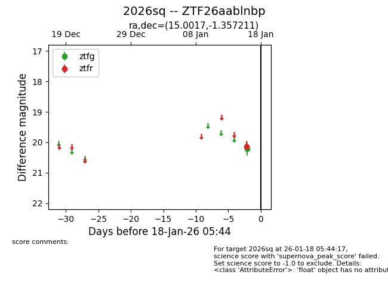
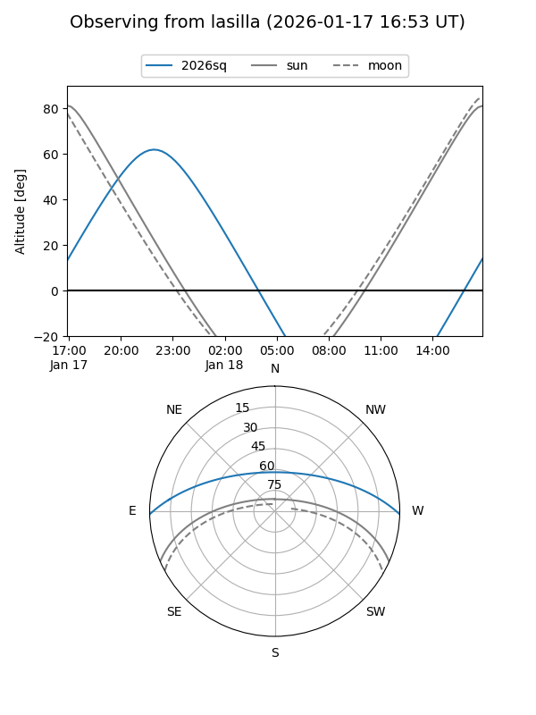
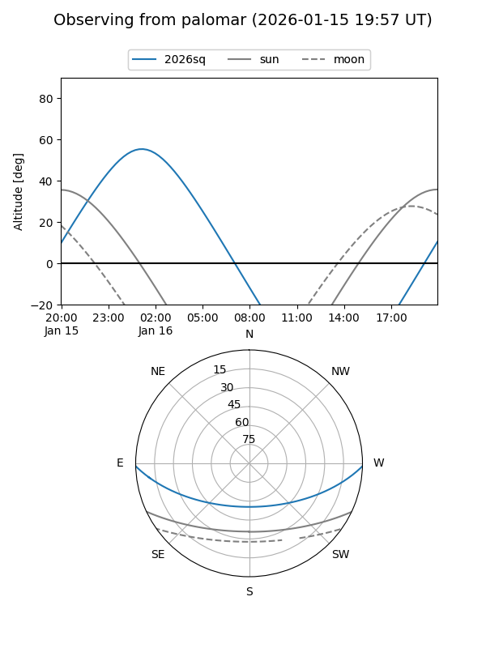

2026sq
Target 2026sq at 2026-01-18 05:45
Aliases and brokers:
FINK: link
Lasair: link
ALeRCE: link
TNS: link
YSE: link
alt names
ZTF26aablnbp (ztf,fink_ztf)
2026sq (tns,yse)
Coordinates:
equatorial (ra, dec) = 15.0017,-1.35721
equatorial (HMS+DMS) = 01:00:00.41,-01:21:25.96
galactic (l, b) = (127.8481,-64.14714)
Flags:
Photometry:
last ztfg=20.21, ztfr=20.13
1 ztfg, 1 ztfr detections
Lightcurve

Visibility


Additional plots